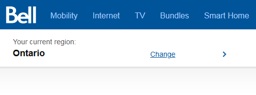
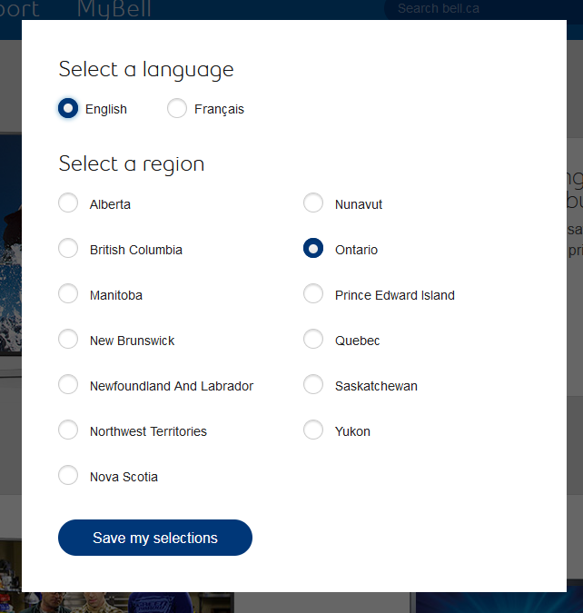
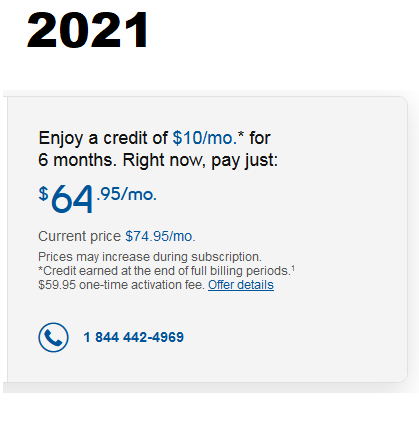
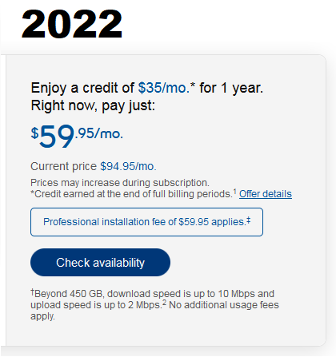

About me
I'm a full-stack web developer who specializes with front-end development. I spend a good amount of my free time coding and making websites such as this, but I also have professional experience with web development. A couple of case studies can be seen on this page.
After graduating from York University with a bachelor's in computer science, I got a job at Bell Canada at their Creekbank campus. There I spent a while maintaining and updating pages on bell.ca, which is made up of an ASP.NET MVC application that receives hundreds of changes each day. There were a number of projects involving this site that I had the opportunity to work on.
Projects on this page:
Province selector
If you go to bell.ca today without cookies saved, you will see a component like this:
But prior to 2018 this component looked like this:
I was among the team who worked on this component. The idea came from a couple of other developers at Bell, but I began development before we had a design in place. I began by making a layout myself and then molding it to the existing design some weeks later. Then with the help of the team I connected the front-end to a Geolocation service that would automatically detect the user's province based on their IP address.
The old layout consisted a modal window that would cover the entire screen, and didn't have automatic geolocation. This was very intrusive for users who were on private browsing or didn't have cookies enabled. The new banner-style province selector automatically sets the user's region and lets them change it through a dropdown menu. This design has been considered much more compact and useful, and is still being used on the site today!
Aliant ordering
Bell Aliant is a subsidiary of Bell Canada for providing services in the Atlantic provinces. Prior to 2022, wireless home internet products could only be ordered by Bell Aliant customers by phone or filling out a web form. The aim of this project was to establish a new connection between the front and back-end that would allow Aliant customers to order these products online. This involved a good amount of back-end development and a lot of troubleshooting, as I was not familiar with the architecture of the Bell Aliant website prior. Much of the existing MVC application had to be reworked to enable this to happen.


Comparison of the WHI 25 package between 2021 and 2022. Note the inclusion of "Check availability" button which leads the user through the ordering process.
Print & Email
This was one of the earliest projects I had a degree of freedom with at Bell. This was a project that was meant to launch in 2016 but was held back due to changes in business. It changed hands a few times until it ended up with me.
The aim of this project was to make a brochure in Adobe's PDF format that would dynamically generate TV channel names and logos based on what is available in the customer's area. It also included pricing information for available TV packages and addons. I was tasked with implementing the layout of the brochure based on mockups from the design team. This involved usage of PDFLib, a developer library for dynamically generating and manipulating PDFs. There was a lot of trial and error and some painstaking work in placing all the elements according to the design and making sure all the pages generated correctly but we got the project finished by the end of 2017!
Print and email marks the first time bell.ca had any sort of dynamic PDF generation. Unfortunately this feature now seems to be deprecated so I do not have any screenshots of it.